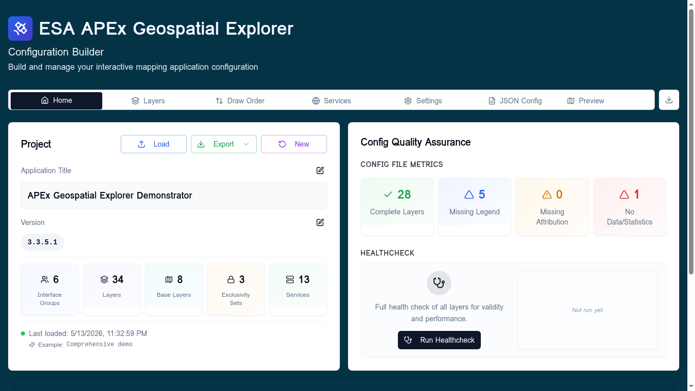
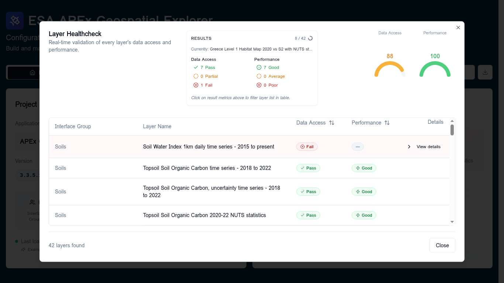
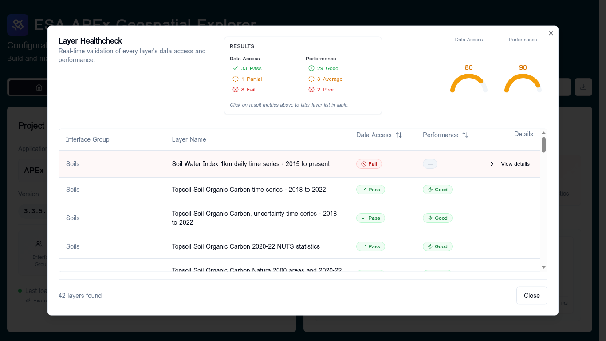
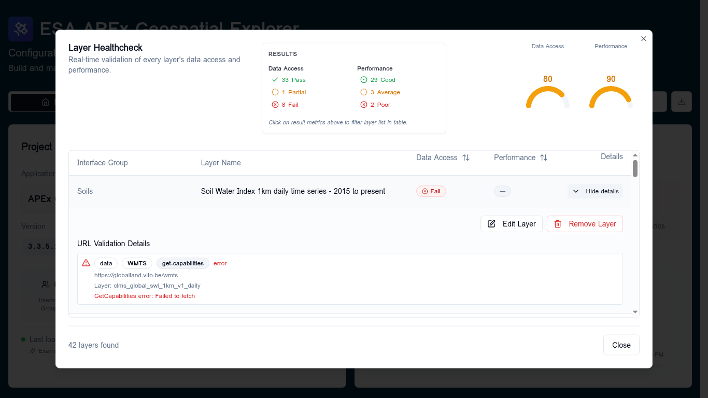
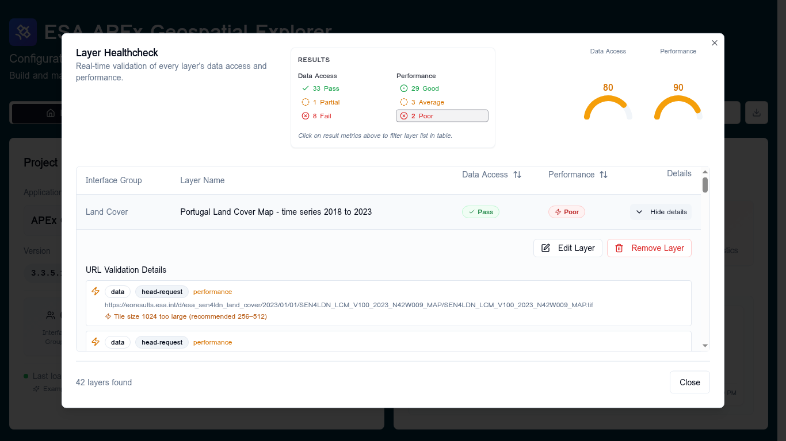
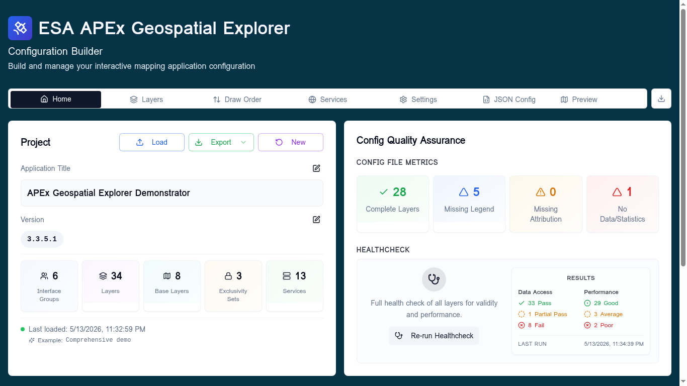

Run Healthcheck¶
The Run Healthcheck tool validates every layer in your configuration in a single batch and reports two independent scores:
- Data Access — can the URL be reached and does it respond correctly?
- Performance — once reached, will it perform well in the APEx Geospatial Explorer?
Use it after you load or modify a config to see, at a glance, which layers are broken, which are slow, and which are healthy.
Follow along
All screenshots on this page were taken with the Comprehensive demo config loaded. Load it yourself from Home → Load → Examples → Comprehensive demo to reproduce them.
When to use it¶
- Right after loading a config from disk, GitHub, or a URL.
- After adding or editing services and layers, to confirm nothing regressed.
- Before exporting a config that will be shipped to the public APEx Geospatial Explorer.
Launching the healthcheck¶
The entry point lives on the Home tab, in the Config Quality Assurance card on the right. Click Run Healthcheck.

The Layer Healthcheck dialog opens and starts validating layers immediately.
You do not need to configure anything — the run uses your current sources and
services definitions.
Watching a run in progress¶
The dialog runs validation in display order (Interface Group, then layer position) so the order in the table matches what you see on the Layers tab.

While the run is active you will see:
- A progress counter (
8 / 42) and a spinner in the Results card header. - The currently checking layer name, updated as each layer starts.
- The Data Access and Performance gauges on the right, recomputed live as results come in.
- Per-row badges that move from Queued → Checking… → final status.
You can leave the dialog open while it runs; you cannot close it accidentally because progress is incremental and resumable on the next run.
Reading the results¶
When the run finishes the gauges, summary, and table are all populated.

The score gauges¶
Two semicircular gauges in the dialog header summarise the run as a 0–100 score:
| Score range | Colour | Meaning |
|---|---|---|
| 95 – 100 | Green | Healthy — safe to ship |
| 80 – 94 | Amber | Mostly healthy, some issues to investigate |
| 70 – 79 | Amber | Noticeable degradation |
| Below 70 | Red | Significant issues — review before publishing |
— |
Grey | Not enough scorable layers to compute |
Each score is a weighted average over all layers that have a meaningful result; layers reported as N/A (e.g. layers with no URLs to check) are excluded so they do not skew the score.
Data Access status¶
Per layer, Data Access rolls up the reachability of every URL on the layer (data URLs and statistics URLs).
| Status | When it is reported |
|---|---|
| Pass | All checkable URLs returned a successful response. |
| Partial Pass | At least one URL succeeded but at least one failed. |
| Fail | No URLs are reachable. |
| N/A | The layer has no URLs to validate, or all of them were skipped. |
Performance status¶
Performance is only computed when Data Access is not Fail — there is no point in measuring performance on something that does not load.
| Status | When it is reported |
|---|---|
| Good | No performance warnings on any URL. |
| Average | Exactly one performance warning across the layer. |
| Poor | Two or more performance warnings, or any pixel-interleaved (BIP) COG (these are always treated as Poor regardless of count). |
| — | Not measured (Data Access was Fail or N/A). |
Common performance warnings include payload size above the 2 MB advisory threshold, oversized internal tile sizes on COGs, missing overviews, and pixel-interleaved storage layouts.
Drilling into a single layer¶
Click View details on any row to expand it. The expanded panel lists every
URL the healthcheck probed, the request type used (head-request,
get-capabilities, etc.), and the underlying error or warning message.
A failing layer (Data Access = Fail)¶

In this example the layer's WMTS endpoint returned Failed to fetch from a
GetCapabilities probe. Typical root causes:
- The service URL has changed or the endpoint is offline.
- The host blocks browser requests with a missing or restrictive CORS header.
- A typo in the layer identifier (
Layer:shown under the URL).
A slow but reachable layer (Performance = Poor)¶

This COG passes Data Access — the file loads — but it is flagged
Poor for performance. The expanded view spells out why:
Tile size 1024 too large (recommended 256–512). Re-tiling the COG with
smaller internal tiles will move it to Good.
Filtering the table¶
The Results card doubles as a quick filter. Click any of the count chips (e.g. 2 Poor, 8 Fail) to restrict the table to just those layers. Click the same chip again to clear the filter. The two columns of chips are mutually exclusive — selecting one in Performance clears any active Data Access filter.
You can also sort the table by clicking the ↕ icon in either the Data Access or Performance column header. Worst first puts problems on top so they are easy to triage; Best first confirms what is healthy.
Acting on results¶
From an expanded row you can:
- Edit Layer — jumps to the layer's card on the Layers tab so you can fix URLs, swap services, or adjust settings without leaving your place.
- Remove Layer — deletes the layer from the config. You will be asked to confirm; this is the right choice for layers whose source is permanently gone.
Both actions update the underlying config immediately. Your healthcheck results stay visible until you run again, so you can keep working through the list.
Re-running¶
After fixing issues, return to the Home tab and click Re-run Healthcheck. The button label changes to Re-run Healthcheck as soon as any results exist for the current config, and the previous run's summary stays visible on the Home tab until the new one completes.

You can also click the Results card on the Home tab to reopen the dialog in view-only mode without re-running, which is useful when you just want to look up a previous result.
Common failure modes and what to do¶
| Symptom in details panel | Likely cause | What to try |
|---|---|---|
Failed to fetch on a GetCapabilities probe |
CORS blocked, endpoint down, or DNS failure | Open the URL in a new browser tab; if it loads there but fails here, it is almost certainly CORS. Ask the service operator to allow your origin. |
HTTP 403 from an S3-hosted asset |
Bucket policy denies anonymous reads | Verify the object is public, or switch to a presigned URL workflow. |
Tile size NNN too large (recommended 256–512) |
COG was generated with an unusually large internal tile size | Re-tile the COG with gdal_translate -co BLOCKXSIZE=512 -co BLOCKYSIZE=512. |
Pixel-interleaved warning |
COG uses BIP interleave, which is slow to render | Re-tile with INTERLEAVE=BAND (BSQ). |
Large file: NN MB |
Static asset above the 2 MB advisory threshold | Consider tiling the asset or splitting the dataset by region or time. |
Timed out |
Service responded but took too long | Often transient — re-run. Persistent timeouts usually mean the service needs a CDN in front of it. |
Related¶
- Diagnostics — per-service probe results, run from the Services manager.
- Adding services — register endpoints that the healthcheck can validate against.
- Layers → Overview — where to fix layer-level configuration once the healthcheck identifies a problem.
- Troubleshooting — broader recovery tips beyond healthcheck-specific errors.